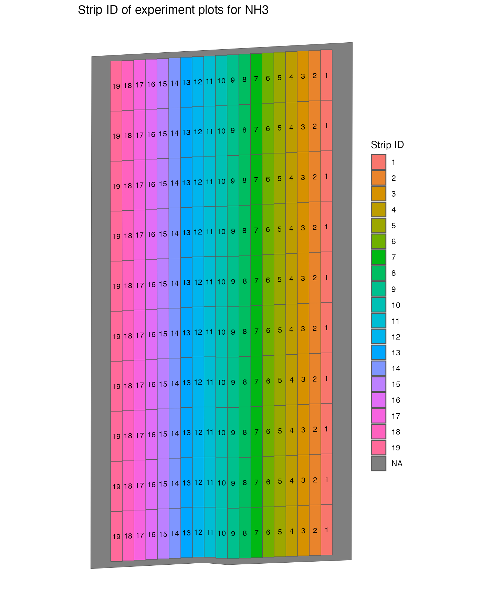
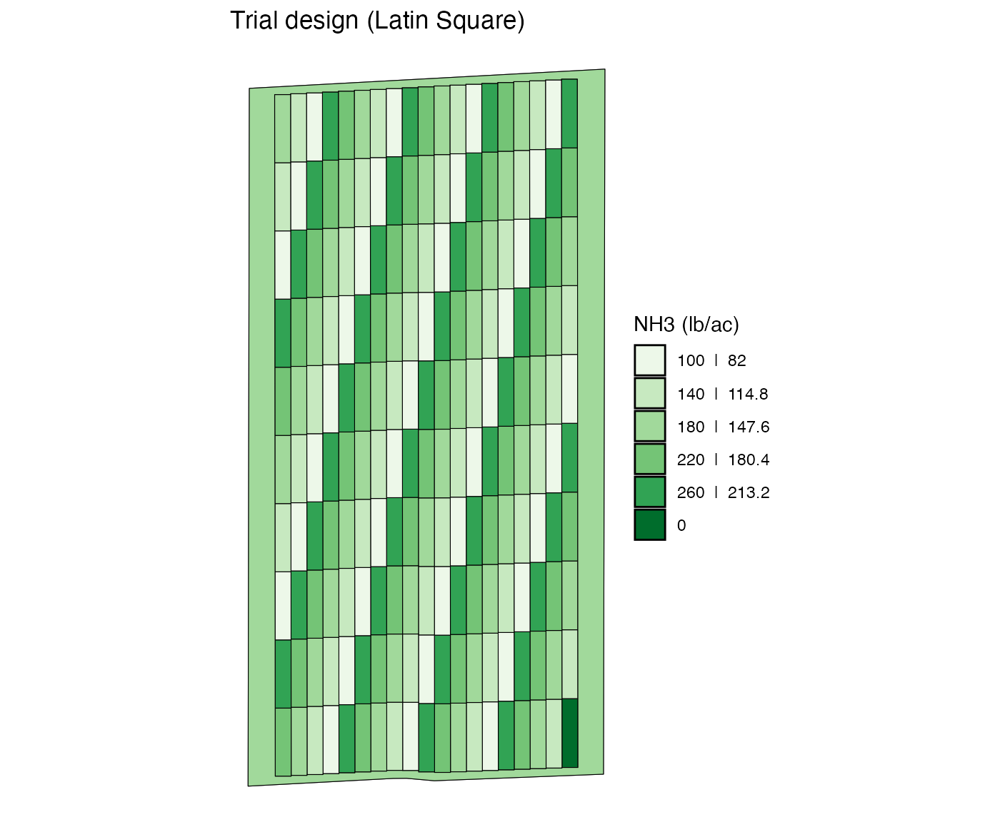
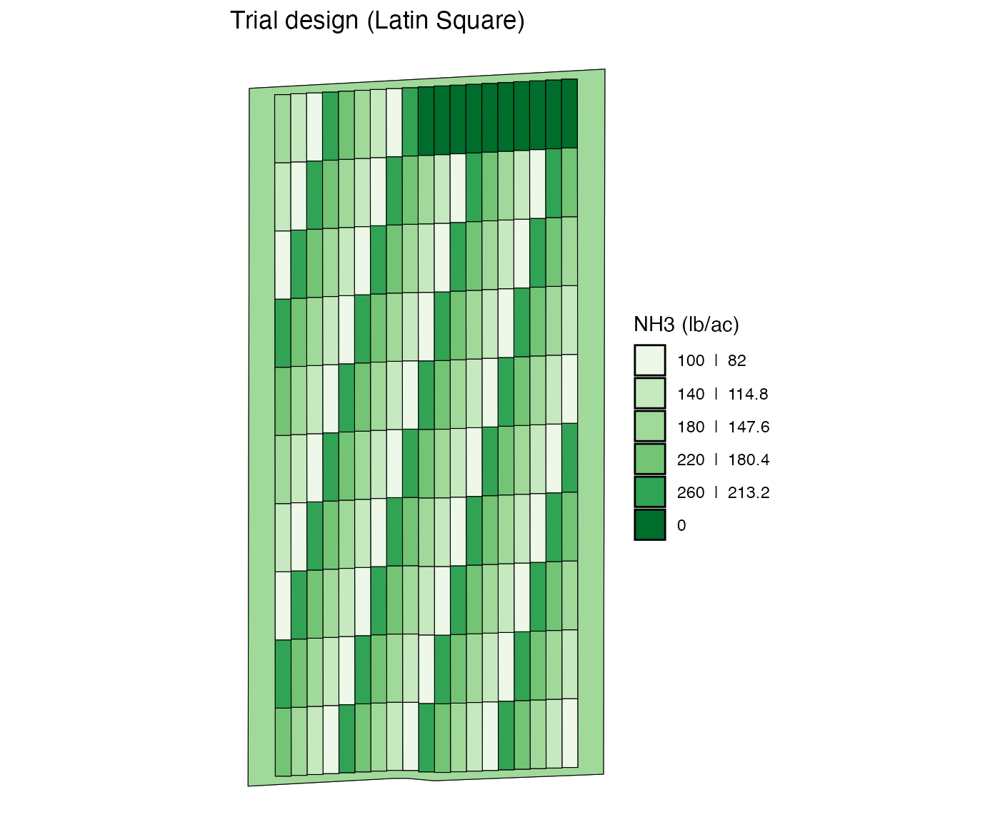
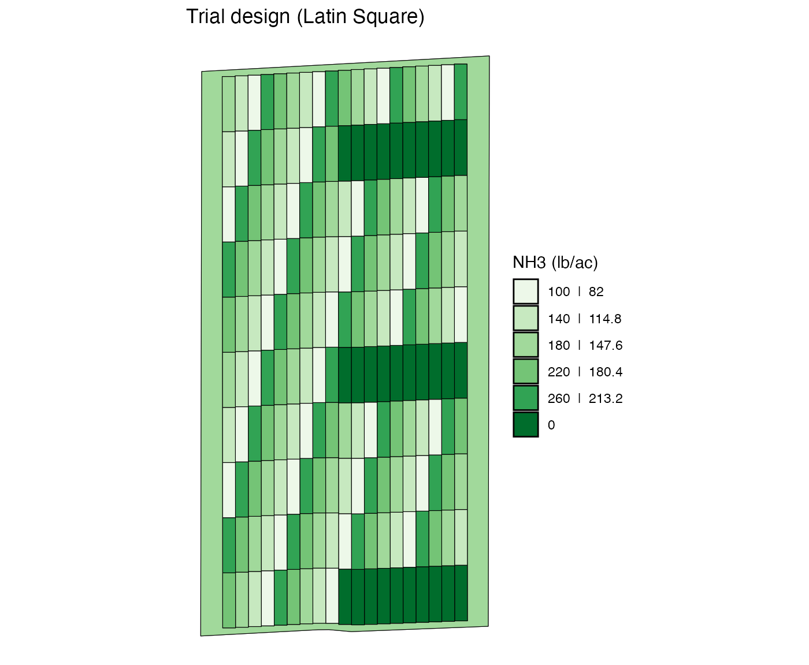
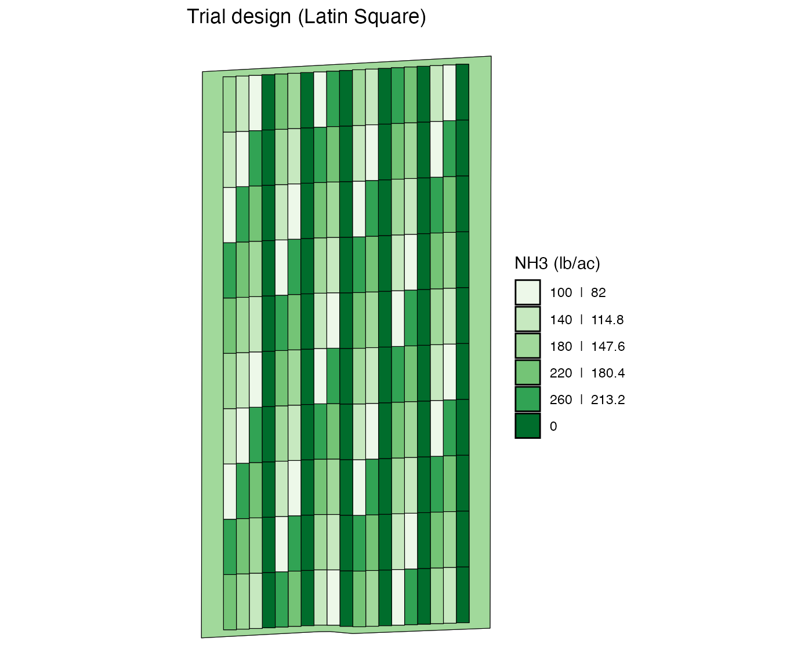

Change Trial Rates Manually
V3-change-rates-manually.Rmd
library(ofpetrial)
library(ggplot2)
library(dplyr)
#>
#> Attaching package: 'dplyr'
#> The following objects are masked from 'package:stats':
#>
#> filter, lag
#> The following objects are masked from 'package:base':
#>
#> intersect, setdiff, setequal, unionSuppose you have created a trial design is made using
assign_rates() to experiment plots made by
make_exp_plots(), but you are not quite satisfied with it
and would like to change rates here and there. You can easily do so
manually. This vignette demonstrates such operations.
Data Preparation
Let’s first create a trial design for a single input case.
n_plot_info <-
prep_plot_fs(
input_name = "NH3",
machine_width = 30,
section_num = 1,
harvester_width = 20,
headland_length = 30,
side_length = 60
)
exp_data <-
make_exp_plots(
input_plot_info = n_plot_info,
boundary_data = system.file("extdata", "boundary-simple1.shp", package = "ofpetrial"),
abline_data = system.file("extdata", "ab-line-simple1.shp", package = "ofpetrial"),
abline_type = "free"
)
#> Linking to GEOS 3.11.0, GDAL 3.5.3, PROJ 9.1.0; sf_use_s2() is TRUE
n_rate_info <-
prep_rates_s(
plot_info = n_plot_info,
gc_rate = 180,
unit = "lb",
rates = c(100, 140, 180, 220, 260),
design_type = "ls",
rank_seq_ws = c(1, 2, 3, 4, 5),
rank_seq_as = c(1, 2, 3, 4, 5)
)
td <-
assign_rates(
exp_data = exp_data,
rate_info = n_rate_info
)Here is what the trial design looks like.
viz(td, type = "rates")
Changing rates
It is important to be aware that every single plot is assigned a
withint-strip plot id and a strip id when they were created using
make_exp_plots().
td$trial_design[[1]]
#> Simple feature collection with 172 features and 4 fields
#> Geometry type: POLYGON
#> Dimension: XY
#> Bounding box: xmin: -16.70078 ymin: 39.11957 xmax: -16.69604 ymax: 39.12696
#> Geodetic CRS: WGS 84
#> First 10 features:
#> rate strip_id plot_id type geometry
#> 1 100 1 1 experiment POLYGON ((-16.70021 39.1198...
#> 2 140 1 2 experiment POLYGON ((-16.70021 39.1205...
#> 3 180 1 3 experiment POLYGON ((-16.70021 39.1212...
#> 4 220 1 4 experiment POLYGON ((-16.70021 39.1219...
#> 5 260 1 5 experiment POLYGON ((-16.70021 39.1225...
#> 6 100 1 6 experiment POLYGON ((-16.70021 39.1232...
#> 7 140 1 7 experiment POLYGON ((-16.70021 39.1239...
#> 8 180 1 8 experiment POLYGON ((-16.70021 39.1246...
#> 9 220 1 9 experiment POLYGON ((-16.70021 39.1255...
#> 10 140 2 1 experiment POLYGON ((-16.7 39.11984, -...The figure below shows the strip id associated with each plot.
viz(td, type = "strip_id")
#> Warning in st_point_on_surface.sfc(sf::st_zm(x)): st_point_on_surface may not
#> give correct results for longitude/latitude data
#> Warning: Removed 1 rows containing missing values (`geom_text()`).
The figure below shows the plot id associated with each plot.
viz(td, type = "plot_id")
#> Warning in st_point_on_surface.sfc(sf::st_zm(x)): st_point_on_surface may not
#> give correct results for longitude/latitude data
#> Warning: Removed 1 rows containing missing values (`geom_text()`).
As you can see, plot_id is the unique numeric identifier
assigned to each of the plots within a strip. So, there
are multiple plots with the same plot_id values, but a
combination of strip_id and plot_id uniquely
identifies a plot.
By plot
You can use change_rate_by_plot() to change rates. The
code below change the rate asscociated the plot with
strip_id = 1 and plot_id = 1 (left bottom
cell) to 0.
modified_td <-
change_rate_by_plot(
td,
input_name = "NH3",
strip_ids = 1,
plot_ids = 1,
new_rate = 0
)
viz(modified_td, type = "rates", abline = FALSE)
You can change rates of multiple plots with the same
plot_id across multiple strip_ids.
change_rate_by_plot(
td,
input_name = "NH3",
strip_ids = 1:10,
plot_ids = 10,
new_rate = 0
) %>%
viz(abline = FALSE)
When you give vectors of values to stip_ids and
plot_ids, the plots with all the possible combinations of
strip_id-plot_id are going to have a new
rate.
change_rate_by_plot(
td,
input_name = "NH3",
strip_ids = 1:10,
plot_ids = c(1, 5, 9, 14, 19, 24),
new_rate = 0
) %>%
viz(abline = FALSE)
By strip
change_rate_by_strip() lets you change the rate of all
the plot in the strips you specified. When you supply vectoros of equal
length to strip_ids and new_rates, then
nth element of strip_ids is matched with
nth element of new_rates.
change_rate_by_strip(
td,
input_name = "NH3",
strip_ids = c(1, 4, 7, 10, 13, 16, 19),
new_rates = seq(0, 270, length = 7)
) %>%
viz(abline = FALSE)
If you supply a single value to new_rates while
supplying more than one values to strip_ids, the single
rate will be assigned to all the strips specified in
strip_ids.
change_rate_by_strip(
td,
input_name = "NH3",
strip_ids = c(1, 4, 7, 10, 13, 16, 19),
new_rates = 0
) %>%
viz(abline = FALSE)
By block
By default, experiment plots made using make_exp_plots()
are not assigned block IDs. You can do so using
add_blocks().
td_with_blocks <- add_blocks(td)
viz(td_with_blocks, type = "block_id")
#> Warning in st_point_on_surface.sfc(sf::st_zm(x)): st_point_on_surface may not
#> give correct results for longitude/latitude data
#> Warning: Removed 1 rows containing missing values (`geom_text()`).